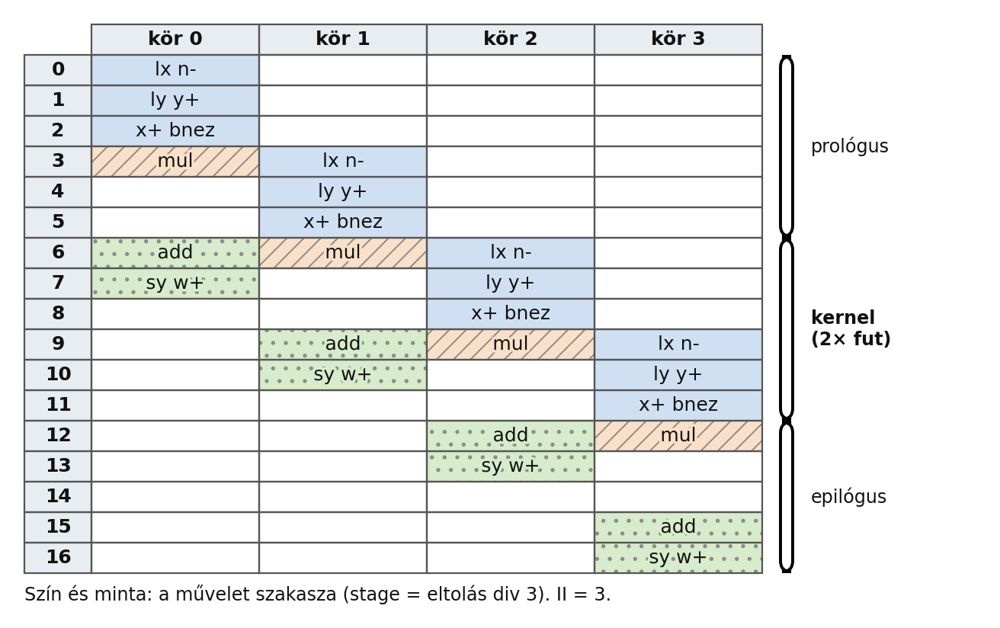

Vegyük az egész számokra írt saxpy ciklusát
(),
és egy olyan gépet, amely ciklusonként négy műveletet tud elindítani, de
nem keres maga párhuzamosságot: azt hajtja végre, amit
egy négyrekeszes utasításszóba írtak, pontosan abban a ciklusban. Ha a
fordító a ciklustestet egyenesen ütemezi, egy elem 8 ciklust vesz
igénybe, és a 32 rekeszből 23 üresen marad. Ugyanez a gép átfedő
ütemezéssel elemenként 3 ciklus alatt is elvégzi a munkát –
hardverváltoztatás nélkül.
Ez a VLIW (very long instruction word) alapgondolata. Eddig a hardver kereste a párhuzamosságot: A Tomasulo-algoritmus foglalási állomásai és a ROB futás közben döntik el, mi indulhat. A VLIW a döntést fordítási időbe tolja: egyszerűbb, takarékosabb hardver, cserébe a fordítónak mindent előre tudnia kell.
Egy VLIW-program olyan, mint egy négyfős csapat percre bontott munkaterve: soronként négy oszlop (slot), mindegyikben egy művelet, vagy ha nincs mit tenni, NOP (üres művelet). A gép a -edik ciklusban a -edik sor minden műveletét elindítja, és nem ellenőrzi, hogy az operandusok készen vannak-e: ezt a terv készítőjének, a fordítónak kell garantálnia.
Az alábbi ábra bal oldalán a ciklustest függőségi gráfja látható: a csúcsok a műveletek, az él pedig azt mondja, hogy a célművelet leghamarabb hány ciklussal a forrás után indulhat. A jobb oldalon ugyanennek a kódnak két ütemterve: egyszeres és négyszeres ciklusgörgetéssel.
saxpy ciklustest függőségi gráfja és listás
ütemezése négyslotos VLIW-gépre (2 memóriaegység, 1 szorzó, betöltés és
szorzás 3 ciklus), görgetés nélkül és négyszeres
görgetéssel.A felső táblázat 1., 2., 4. és 5. sora üres, mert a mul
a betöltésre, az add a szorzásra vár; a görgetett változat
ezeket más elemek munkájával tölti ki.
Definíció. A VLIW-szó rögzített számú () slotot tartalmazó utasítás; a szó minden művelete ugyanabban a ciklusban indul. Az ütemterv kitöltöttsége
ahol a hasznos műveletek, a szavak száma. vagyis a kiadási lehetőségek hány részét használtuk; a maradék NOP. A slotok nem egyformák: a modellünkben 4 slot, ezek között legfeljebb 2 memóriaművelet, 1 szorzás és 1 ugrás; az ugrás a ciklustest utolsó szavában van.
A klasszikus VLIW-szerződés a statikus késleltetés: a betöltés és a szorzás pontosan 3 ciklus múlva adja az eredményt. A hardver nem figyel hazárdot (Adathazárdok: forwarding és stall), nincs benne stall-logika. Ez vezérlést spórol, de két következménye van:
A legegyszerűbb ütemező a listás ütemezés (list scheduling). Először felépítjük a függőségi gráfot (ILP, függőségek és statikus ütemezés). Az élek késleltetése:
| Él | Jelentés | Minimális távolság |
|---|---|---|
| RAW | az eredményt olvassa | a forrás késleltetése |
| WAR | olyan regisztert ír, amit a forrás olvas | 0 (azonos szó megengedett) |
| memória | tárolás → betöltés / betöltés → tárolás | 1 / 0 |
| vezérlés | minden → ugrás | 0 |
A WAR-távolság azért 0, mert egy szó minden művelete a szó kezdetén olvas, az új érték csak később látszik. Ezután minden műveletnek kiszámítjuk a magasságát: , ahol a művelet késleltetése, az él távolsága. A magasság a blokk végéig tartó leghosszabb út: a nagy magasságú műveletet nem szabad halogatni. Végül ciklusról ciklusra haladunk, és a kész műveletek (minden elődjük elég régen elindult) közül a legnagyobb magasságúakat tesszük a szabad slotokba, amíg van hely és egység. Ez mohó heurisztika, nem garantáltan optimális.
Egy körben sok az üres ciklus, mert a betöltés → szorzás → összeadás → tárolás lánc (8 ciklus) nem nyomható össze. A ciklusgörgetés (loop unrolling) kört egy blokkba másol, saját ideiglenes regiszterekkel, és a láncok egymás hézagaiba csúsznak. A modellel (4 slot, 2 memória, 1 szorzó):
| Görgetés | Szavak | Ciklus/elem | Ha x és y átfedhet: ciklus/elem |
|
|---|---|---|---|---|
| 1 | 8 | 8,00 | 28% | 8,00 |
| 2 | 9 | 4,50 | 39% | 8,00 |
| 4 | 11 | 2,75 | 55% | 8,00 |
| 8 | 15 | 1,88 | 73% | 8,00 |
Az utolsó oszlop: ha a fordító nem zárhatja ki, hogy az
y írása módosítja a következő x-et
(aliasing), a
-adik
elem sw-je és a
-edik
lw-je közé sorrendi él kerül, és a görgetés semmit nem ér.
A restrict (C), illetve __restrict (C++)
ígéret itt elemenként 8 és 2 alatti ciklus között dönt (A fordító kimenete: C-ből assembly). Ára a nagyobb
kód, a több regiszter és a maradék elemeket kezelő külön kód.
A görgetés blokkonként újrakezdi a láncot. A szoftveres pipeline (software pipelining, modulo ütemezés) ciklusonként új kört indít, miközben az előzőek még futnak – mint a futószalag, csak a fordító tervezi.
Definíció. A kezdési köz (initiation interval, ) két egymást követő kör indítása közti ciklusszám. Alsó korlátja az erőforrásokból
ahol , az egy körre jutó memória- és szorzóműveletek, az egységek száma. Ehhez jön a körök közötti függőségi körökből adódó korlát (pl. egy akkumulátor késleltetése).
Az y írásához külön mutatót (a4) vezetünk
be, mert az olvasó mutató a tárolásig előreszalad. Így körönként 10
művelet van,
.
Egy ilyen ütemterv: lw x a 0., lw y az 1.,
mul a 3., add a 6., sw a 7.
ciklusban a kör indulásához képest; a mutatóléptetések a 0–2. ciklusban,
az író mutatóé a 7.-ben. A művelet szakasza (stage)
:
itt három szakasz van.

A 6. ciklusban a 0. kör összeadása, az 1. kör szorzása és a 2. kör betöltése egy szóban fut. A teljes futás körre ciklus, nagy -nél tehát 3 ciklus/elem, kitöltöttség . Ha egy érték élettartama -nél hosszabb, regisztermásolatok (modulo variable expansion) vagy forgó regiszterfájl (rotating registers) kell.
A VLIW-nek az elágazás különösen fáj, mert a rövid blokkokban kevés a
párhuzamosítható munka. A predikáció (predication)
minden művelethez egy 1 bites predikátumregisztert
rendelhet: a művelet csak akkor ír eredményt, ha a bit igaz. Az
if–else így egyenes kóddá alakul
(if-konverzió):
elágazással predikálva
bge t0, t3, else p = (t0 < t3)
add s0, s0, t0 (p) add s0, s0, t0
j vege (!p) addi s1, s1, 1
else:
addi s1, s1, 1
vege:Árának modellje: legyen a két ág ütemhossza és , az igaz ág valószínűsége , a tévesztési arány , a büntetés ciklus. Elágazással a várható ciklusszám ; predikálva mindkét ág lefut, ciklus alatt, ahol a szabad slotoktól függ. A predikáció akkor nyer, ha
vagyis ha a várható tévesztési veszteség nagyobb, mint a fölöslegesen
elvégzett munka. Jól jósolható elágazásnál tehát az ugrás,
véletlenszerűnél a predikáció jobb. A mérőgépen a branchy
kernel véletlen adaton elágazással kb. 14,4, feltételes adatmozgatással
(cmov, a predikáció x86-os rokona) kb. 1,0 ciklus/elem volt
(Statikus becslés és a kétbites számláló, Statikus becslés és a kétbites számláló mérés,
2026-11-25). Hasonló eszköz a RISC-V Zicond kiterjesztése
(czero.eqz) és az AArch64 csel; (majdnem)
teljesen predikált utasításkészlet az IA-64 és a 32 bites ARM.
Az Intel és a HP EPIC (explicitly parallel instruction computing) néven vitte volna általános célú processzorba a VLIW-t: ez lett az IA-64 (Itanium). Az utasítások 128 bites kötegekben (bundle) jöttek: három 41 bites utasítás és 5 bit sablon (ellenőrizendő: IA-64 architektúra-kézikönyv), ahol a sablon és a „stop” jelölések mondták meg, mi futhat párhuzamosan – így a bináris elvileg nem függött a gép szélességétől. Ehhez predikátum- és forgó regisztereket, vezérlési spekulációt (betöltés az elágazás elé, utólagos hibaellenőrzés) és adatspekulációt (betöltés egy esetleg átfedő tárolás elé, utólagos ellenőrzés) adott.
Az elv mégsem hozta a várt teljesítményt, a sorozat szállítása
2021-ben véget ért (ellenőrizendő). A legfőbb ok: a fordító nem
tudja, mennyi ideig tart egy betöltés. Tegyük fel, hogy az
x és y minden 16. elemnél (64 bájtos sor, 4
bájtos elem) cache-hibát okoz, 100 ciklus büntetéssel, és a gép
egyszerűen áll, amíg a hiba tart (a VLIW minden slotja egyszerre áll).
Elemenként két hiba/16, egymás után kezelve
ciklus többlet: a 8 ciklusos kód 20,5, a pipeline-olt 3 ciklusos 15,5
lesz. Egy sorrenden kívüli mag közben független munkát végezne (Egy modern mag anatómiája); ha a fordító a
legrosszabb esetre ütemez (betöltés = 100), a görgetés nélküli kör 105
ciklus. További gond volt a nehezen jósolható elágazás, az aliasing és a
nagy kód, miközben a sorrenden kívüli x86-os magok egyre javultak.
A jelfeldolgozó processzorokban (DSP) a VLIW ma is természetes (például a TI C6000 család nyolc funkcionális egységgel; ellenőrizendő): a ciklusok szabályosak, az adat gyakran állandó késleltetésű belső memóriában van, a kód egy adott chipre készül, és az elmaradó ütemező-áramkör energiát spórol. Hasonló okból ütemez statikusan sok neurális gyorsító is (Gyorsítók tervezési elvei: DSA, FPGA, közel-memória számítás).
Ütemezzük kézzel a görgetetlen ciklustestet. Műveletek (a
magassággal): lw x (8), lw y (5),
mul (5), add (2), sw (1),
x+ = addi a1 (1), y+ =
addi a2 (1), n- = addi a3 (2),
bnez (1). A lw x magassága például
.
| Ciklus | Kész műveletek (magasság szerint) | A szóba kerül |
|---|---|---|
| 0 | lw x, lw y, n- |
lw x, lw y, n-,
x+ |
| 1–2 | – | négy nop |
| 3 | mul |
mul |
| 4–5 | – | négy nop |
| 6 | add |
add |
| 7 | sw |
sw, y+, bnez |
A 0. ciklusban az x+ a lw x bekerülése után
válik késszé (WAR, 0), így belefér a negyedik slotba. Az
y+-nak a sw-t is meg kell várnia, mert az
olvassa a2-t. A bnez minden művelet után jön,
így az utolsó szóba kerül. Az eredmény 8 szó, 9 művelet:
.
Az archkit.vliw modul a fenti szabályokat valósítja meg,
és az ütemtervet hazárdfigyelés nélkül végre is hajtja.
import sys; sys.path.insert(0, "code")
from archkit import vliw as V
s = V.list_schedule(V.saxpy_body(1))
print(s.table())
print(f"szavak: {s.length}, kitöltöttség: {s.fill:.1%}, nop: {s.nops}")ciklus slot 0 slot 1 slot 2 slot 3
0 lw x lw y n- x+
1 nop nop nop nop
2 nop nop nop nop
3 mul nop nop nop
4 nop nop nop nop
5 nop nop nop nop
6 add nop nop nop
7 sw y y+ bnez nop
szavak: 8, kitöltöttség: 28.1%, nop: 23Pontosan a kézi táblázat. A görgetés és az aliasing hatása, valamint a pipeline-olt kód ellenőrzése:
def words_of(s):
return [[s.ops[i] for i in w] for w in s.words]
for u in (1, 2, 4, 8):
a = V.list_schedule(V.saxpy_body(u))
b = V.list_schedule(V.saxpy_body(u), restrict=False)
print(f"U={u}: {a.length:2d} szó, {a.length / u:4.2f} c/elem, "
f"kitöltés {a.fill:.0%}; aliasinggel {b.length / u:4.2f} c/elem")
ops, edges = V.pipeline_loop()
offsets = [0, 1, 3, 6, 7, 2, 1, 7, 0, 2] # lx ly mul add sw x+ y+ w+ n- bnez
print("II alsó korlát:", V.res_mii(ops))
print("hibák II=3 mellett:", V.check_modulo(ops, edges, offsets, 3))
print("hibák II=2 mellett:", len(V.check_modulo(ops, edges, offsets, 2)))
regs, mem = V.demo_state(16)
words = V.expand_modulo(ops, offsets, 3, 16)
V.execute(words, regs, mem)
y = [mem[0x2000 + 4 * i] for i in range(16)]
print(len(words), "ciklus 16 elemre; helyes:", y == V.saxpy_expected(16))U=1: 8 szó, 8.00 c/elem, kitöltés 28%; aliasinggel 8.00 c/elem
U=2: 9 szó, 4.50 c/elem, kitöltés 39%; aliasinggel 8.00 c/elem
U=4: 11 szó, 2.75 c/elem, kitöltés 55%; aliasinggel 8.00 c/elem
U=8: 15 szó, 1.88 c/elem, kitöltés 73%; aliasinggel 8.00 c/elem
II alsó korlát: 3
hibák II=3 mellett: []
hibák II=2 mellett: 4
53 ciklus 16 elemre; helyes: TrueA pipeline-olt kód ciklus alatt helyes eredményt ad. Végül futtassuk a 3 ciklusos betöltésre ütemezett kódot egy olyan gépen, ahol a betöltés 4 ciklus:
s = V.list_schedule(V.saxpy_body(1))
for load in (3, 4):
regs, mem = V.demo_state(4)
V.execute(words_of(s) * 4, regs, mem, {**V.LATENCY, "load": load})
print(f"load={load}: y = {[mem[0x2000 + 4 * i] for i in range(4)]}")
print("helyes: ", V.saxpy_expected(4))load=3: y = [3, 16, 29, 42]
load=4: y = [0, 13, 26, 39]
helyes: [3, 16, 29, 42]A 4 ciklusos gépen a mul a 3. ciklusban még az
előző kör x értékét olvassa (az első
körben 0-t):
a
helyett. A hiba csendes, kivétel nélkül.
Továbbvitt eredmény. A statikus ütemezés (listás ütemezés, görgetés, -alapú szoftveres pipeline) és a predikáció (a vezérlési függőségből adatfüggőség lesz) visszatér a vektor-ISA-k predikátum- és maszkregisztereinél (Vektor-ISA-k: RVV és SVE) és a statikusan ütemezett gyorsítóknál (Gyorsítók tervezési elvei: DSA, FPGA, közel-memória számítás).
A függőségi ábra HTML-változatán (VLIW-ütemezés) lépésenként követheted az ütemezőt (alapérték: 4 slot, 2 memóriaegység, 1 szorzó, 3–3 ciklus).
__restrict, helyi
változók, majd a fordítói jelentés ellenőrzése.y[i] = x[i]*x[i] ciklustestét:
lw t0,0(a1); mul t1,t0,t0;
sw t1,0(a2); három addi; bnez.
Hány szó, mekkora a kitöltöttség?archkit.vliw-vel, hány memóriaegység és szorzó kell 8
slotos gépen, 8× görgetéssel, hogy az ütem legfeljebb 1,4 ciklus/elem
legyen.A VLIW-gép egy ciklusban egy hosszú szó slotjait indítja; a függőségeket és a késleltetéseket a fordító garantálja, a hardver nem figyel hazárdot. A listás ütemezés a függőségi gráf magasságai szerint tölti a slotokat; görgetés és -alapú szoftveres pipeline növeli a kitöltöttséget (a mintaciklus 8-ról 3, illetve 1,88 ciklus/elemre), de aliasing mellett nem segít. A predikáció az elágazást adatfüggőséggé alakítja, nehezen jósolható elágazásnál hasznos. Az EPIC/Itanium a kiszámíthatatlan memóriakésleltetésen, az elágazásokon és a kompatibilitáson bukott; DSP-kben és gyorsítókban a statikus ütemezés ma is bevált. Ez a statikus ütemezés és predikáció tér vissza a vektor-ISA-knál és a gyorsítóknál.
1. feladat. 0. ciklus: lw,
addi a3 (számláló), addi a1 (WAR 0); a
mul a 3., a sw a 6. ciklusban indulhat. A
sw szavába kerülhet az addi a2 (WAR 0) és a
bnez is. 7 szó, 7 művelet,
.
2. feladat. bit hasznos utasításonként, a 32 bites RISC-V duplája (a C-kiterjesztéssel még kevesebb kell). Ez az utasítás-cache-t is terheli.
3. feladat. Elágazással . a) , tehát minden esetén a predikáció jobb. b) , azaz .
4. feladat. : 15 művelet, 6 memória, 2 szorzás: , azaz 2 ciklus/elem. : 25 művelet, 12 memória, 4 szorzás: , azaz 1,75 ciklus/elem. A görgetés a vezérlő műveletek költségét több elemre osztja.
5. feladat.
for mem in (2, 4):
for mul in (1, 2, 4):
n = V.list_schedule(V.saxpy_body(8), slots=8, mem=mem, mul=mul).length
print(f"mem={mem} mul={mul}: {n / 8:.3f} c/elem")mem=2 mul=1: 1.875 c/elem
mem=2 mul=2: 1.500 c/elem
mem=2 mul=4: 1.500 c/elem
mem=4 mul=1: 1.875 c/elem
mem=4 mul=2: 1.375 c/elem
mem=4 mul=4: 1.125 c/elemLegalább 4 memóriaegység és 2 szorzó kell (1,375). Egy szorzóval a 8 szorzás önmagában 8 egymást követő szót foglal; 2 memóriaegységgel a 24 memóriaművelet 12 szót.
6. feladat.
print(V.list_schedule(V.saxpy_body(1), {**V.LATENCY, "load": 5}).length, "szó")10 szóAz újrafordított kör 10 szó: csak a betöltést követő lánc csúszik két ciklussal. Ha minden szó közé két üres szót tennénk, a kód helyes maradna, de a kör 24 ciklusos lenne: a fordító pontos késleltetés-modellje a teljesítmény feltétele is.